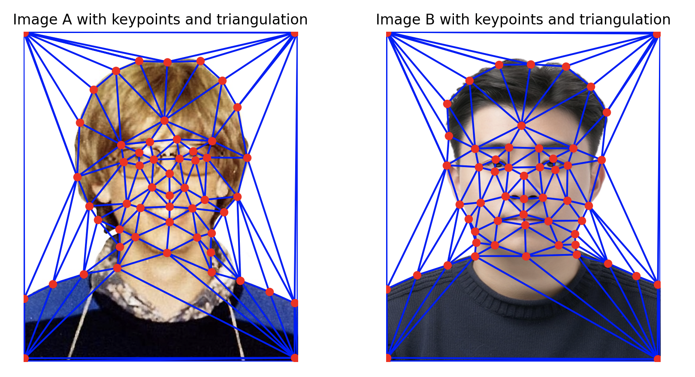
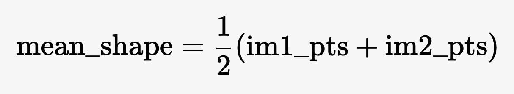
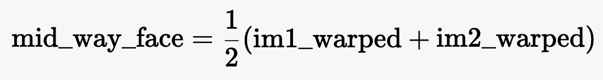
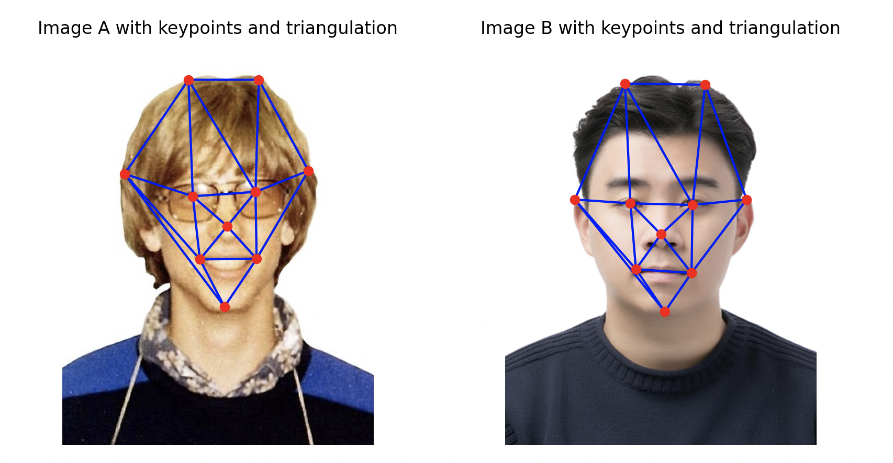

<!DOCTYPE html>
<html lang="en">
<head>
    <meta charset="UTF-8">
    <meta name="viewport" content="width=device-width, initial-scale=1.0">
    <title>CS180 Portfolio - Project 3</title>
    <style>
        body {
            font-family: Arial, sans-serif;
            line-height: 1.6;
            margin: 0;
            padding: 20px;
            max-width: 800px;
            margin: 0 auto;
        }
        h1, h2 {
            color: #333;
        }
        img {
            max-width: 100%;
            height: auto;
            margin-bottom: 10px;
        }
        .image-container {
            margin-bottom: 30px;
        }
    </style>
</head>
<body>
    <h1>Face Morphing</h1>
  
    <h2>Overview</h2>

    <p>In this project, I tried to create a morph between two images -- my portrait and Bill's mugshot.</p>
    <p>I also computed the mean face of a population dataset, and generate caricatures by extrapolating from the population mean.</p>
    <p>I achieved this through image warping, cross-dissolving colors, and manipulating facial geometries using keypoints and Delauney triangulation.</p>

    <h2>Part 1: Defining Correspondences</h2>
    <p>First, I resized my portrait's dimensions to Bill's mugshot to ensure correspondence.</p>
    <p>Then, I manually selected 55 keypoints on my portrait and Bill's to mark corresponding facial features, 4 of them being the corners. I did this using the labeling tool created by last year's student.</p>
    <p>I then computed a Delaunay triangulation based on the average positions of these keypoints to map the two faces.</p>
    <div class="image-container">
        <h3>Triangulated Sam and Bill</h3>
        
    </div>

    <h2>Part 2: Computing the Mid-Way Face</h2>
    <h3>To create the mid-way image between the two faces, I:</h3>
    <p>1. Calculated the average of the corresponding keypoints from both images to get the intermediate shape, using the formula below:</p>
    <div class="image-container">
        
    </div>
    <p>2. Created empty images im1_warped and im2_warped to store the warped versions of each input image.</p>
    <p>3. Iterated over each triangle in the Delaunay triangulation computed on the average shape. For each triangle, I:</p>
    <p>3a. Extracted the corresponding vertices from both images' keypoints and the average shape.</p>
    <p>3b. Computed the affine transformation matrices to map the source triangles from each image to the destination triangle in the average shape.</p>
    <p>3c. Used the warp_triangle function to perform the affine warping for each triangle, applying inverse warping and masking to ensure accurate pixel mapping.</p>
    <p>4. Averaged the pixel values of the two warped images to blend them together, using the formula below:</p>
    <div class="image-container">
        
    </div>
    
    <h2>Part 3: The Morph Sequence</h2>
    <p>I created a morph sequence, defining 45 frames to show the transition between two faces. I calculated the warp and dissolve fractions (ranged from 0 to 1) for each frame, blending them gradually.</p>
    <p>Plugging these fractions into the morph function, I generated intermediate images and saved them to the output directory. Finally, I compiled these images into an animated GIF, with each frame being displayed for 30 ms.</p>
    <div class="image-container">
        <h3>Morph Sequence GIF</h3>
        
    </div>

    <h2>Part 4:</h2>
    <p>I used a dataset of facial images to compute the mean face by averaging the positions of keypoints and pixel values. This provided insight into the average facial structure and appearance of the population.</p>
    <div class="image-container">
        <h3>Triangulated Sam and Bill</h3>
        
    </div>

    <h2>Part 5</h2>
    <p>Finally, I exaggerated the differences between my face and the computed mean face to create a caricature. This was done by amplifying the deviations in keypoint positions, resulting in an enhanced representation of unique facial features.</p>
    <div class="image-container">
        <h3>Triangulated Sam and Bill</h3>
        
    </div>

  
</body>
</html>
